Electrothermal–Mechanical Co-Design of Distributed Vertical Power Delivery
From Converter Architecture to Physical Package Feasibility
PhD Preliminary Examination · HiPerCAS Lab,
University of Illinois Chicago
1 / 67
Start with one number
1000 A
to a single processor die
A 1 kW accelerator running at a 1 V core rail draws
I = P / V = 1000 W / 1 V
Current, not power, is what the package has to survive. Every conductor between the
board and the die carries some share of that 1000 A.
The engineering problem is not generating
the power. It is delivering it.
2 / 67
Why low-voltage lateral delivery is so expensive
Ploss = Irms2 R
Loss grows with the square of current. Halving the delivery voltage
doubles the current and quadruples the loss in the same copper.
Deliver at 1 V 1000 A across the whole board.
Even 1 mΩ of path resistance burns 1 kW — as much as the chip uses.
Deliver at 48 V ~21 A for the same power. The same 1 mΩ burns
under half a watt.
So: carry 48 V as far as possible, and convert to 1 V
as close to the die as physically possible.
3 / 67
Three ways to deliver the power
Lateral
Regulators at the board edge. The 1 V rail travels centimetres across
the board and up through the package.
LONG HIGH-CURRENT PATH
Vertical (VPD)
Regulator moved underneath the die. The 1 V rail travels vertically
through the package instead of laterally.
SHORTER PATH
Distributed vertical (DVPD)
Many small regulators spread under the die area, each feeding its own
region. The 1 V rail is split 49 ways before it travels anywhere.
SHORT AND SPLIT
This work studies DVPD:
49 regulator cells on a 7×7 grid, each delivering about 20 A.
4 / 67
Packaging 101 — the physical stack
Arrow width suggests current magnitude: thin at 48 V, thick at 1 V.
5 / 67
Two ways to put 49 converters under one die
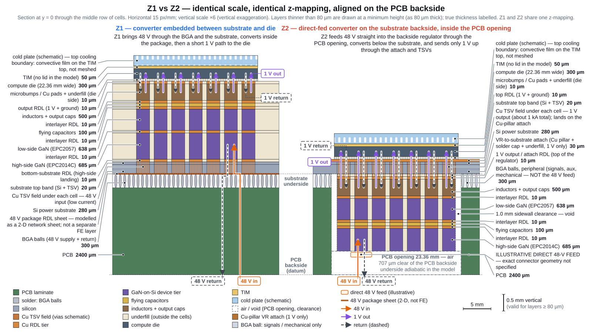
figs/z1_z2_package_comparison.svg — generated from research/final_closure/architecture_geometry.json (layer heights measured on the solver mesh)
6 / 67
Inside one regulator cell
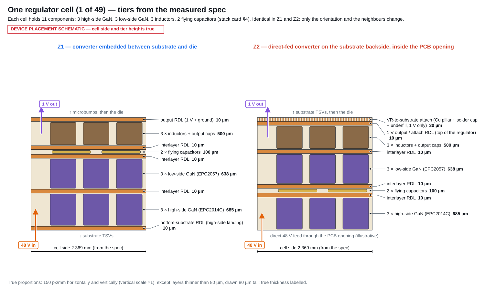
48 V → 3:1 switched capacitor → 16 V → two-phase buck → 1 V.
Each of the 49 cells carries about 20 A at 1 V. The same 11 components and the same
tier heights are used in Z1 and Z2 — only location, support and cooling differ.
Each architecture is pushed through the same chain, and five quantities are compared:
quantity
why it matters
unit
electrical loss
energy wasted between the board and the die
W
peak temperature
the hottest point anywhere in the package
°C
die warpage
how much the die surface bows
µm
joint displacement driver
how far the worst solder ball is sheared
µm
local inelastic strain
how much that ball deforms permanently per cycle
–
A ranking is claimed only where the Z1/Z2 gap is
larger than twice the measured discretisation uncertainty. Otherwise:
"no ranking".
research/final_closure/ordering.json (rule field)
8 / 67
How one architecture is evaluated
Mechanics runs once, after the electrical–thermal loop converges — the mechanical field does not feed back into the temperature, so putting it inside the loop would cost three solves for one answer.
Package RDL — thin copper planes inside the package that spread
current sideways.
Source pad — the small copper landing where a regulator meets
the die interface.
TSV — a copper via straight through the silicon.
Every one of them obeys
R = ρ L / A
resistivity × length ÷ cross-section. The entire
electrical model is this expression applied honestly to real geometry — plus a network
solve wherever current can choose between parallel paths.
KEY IDEA if a conductor exists
physically, it must have exactly one owner in the loss ledger — no double counting,
and no conductor silently set to zero.
Open-source simulation framework, primarily developed by Idaho National Laboratory. Here it is an independent check: it re-solves our heat-flow and current-flow test problems on separate meshes, for comparison.
Numbers
production Reff (Z2, supply)
0.7985 mΩ
MOOSE Reff, finest mesh
0.7976 mΩ
difference
+0.11 %
production runtime
24.4 s (22.5 s–25.8 s)
MOOSE runtime
60.8 s (54.8 s–77.9 s)
runtime ratio
2.49×
Same formulation in both solvers; mesh sequence m1–m3 in MOOSE.
Matched construction: 54 balls per rail for both architectures.
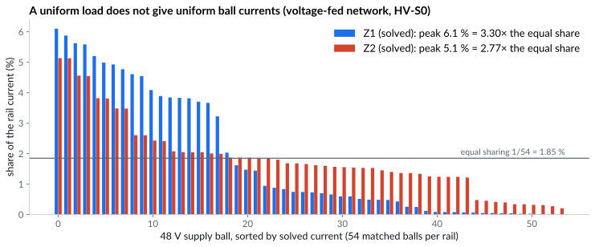
Even with a perfectly uniform
load the balls do not share equally, so a count sized from Itotal/N understates the
worst ball. The count is therefore solved: every legal even count, the network
re-solved at each, verified on the resolved grid.
network re-solved at n=301 for the figure · current HEAD
14 / 67
The heat map: losses go where they are produced
The question: Where is the ~145 W of loss produced, and where does that heat leave the package?
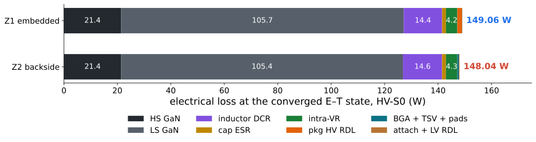
High-side and low-side GaN, inductor and capacitor losses are deposited in their own
tiers, inside the 49 cell footprints. Package, BGA, TSV and pad losses go in their own
layers. Deposited heat equals the electrical ledger to machine precision.
Ansys's heat and structural solver inside Electronics Desktop. Here it is the commercial cross-check: it re-solves our via, wiring-layer, unit-cell temperature and two-layer bending tests for comparison.
Numbers (Z2 unit cell)
vs AEDT Mechanical
-0.11 %
vs MOOSE
-0.12 %
runtime ratio vs AEDT
3.41×
runtime ratio vs MOOSE
0.61×
Error = difference in temperature rise above the coolant.
Resistance rises with temperature, loss rises with resistance, temperature rises with loss.
Iterated until max |ΔT| < 0.25 K and |ΔP|/P < 10-3 — both declared
before any physical result was read.
final_results.json · et_history
17 / 67
Why packages warp — and what Z1 and Z2 actually do
The question: Does the package bend, and how hard is the worst solder ball pushed sideways?
Silicon expands about 2.6 ppm/K, the board about 15 ppm/K, copper about 17 ppm/K.
Bonded together and heated, they cannot all grow freely, so the stack bends
and the solder balls between them are sheared.
Right: the production thermoelastic solution itself — the die-top surface
of each architecture, one colour scale.
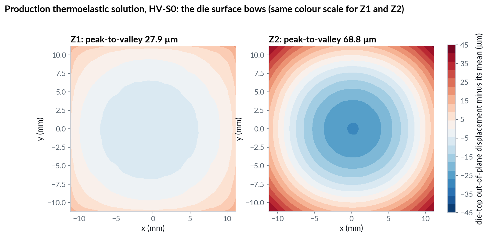
figs/die_warpage_maps.png — production structural solution (r21 mesh); peak-to-valley checked against final_results.json
18 / 67
Global mechanics vs AEDT and the closed form
Exact geometry, re-rendered
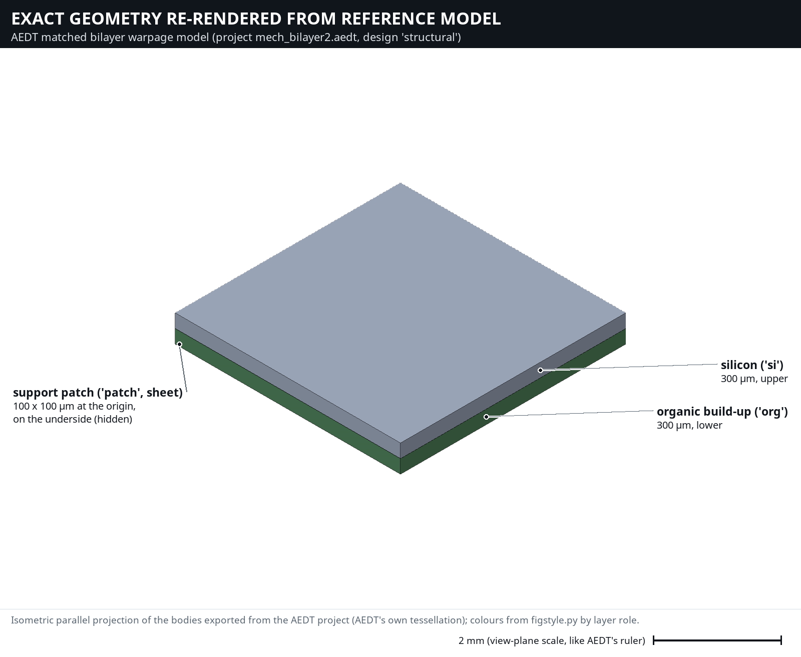
Ansys screenshot — matched run
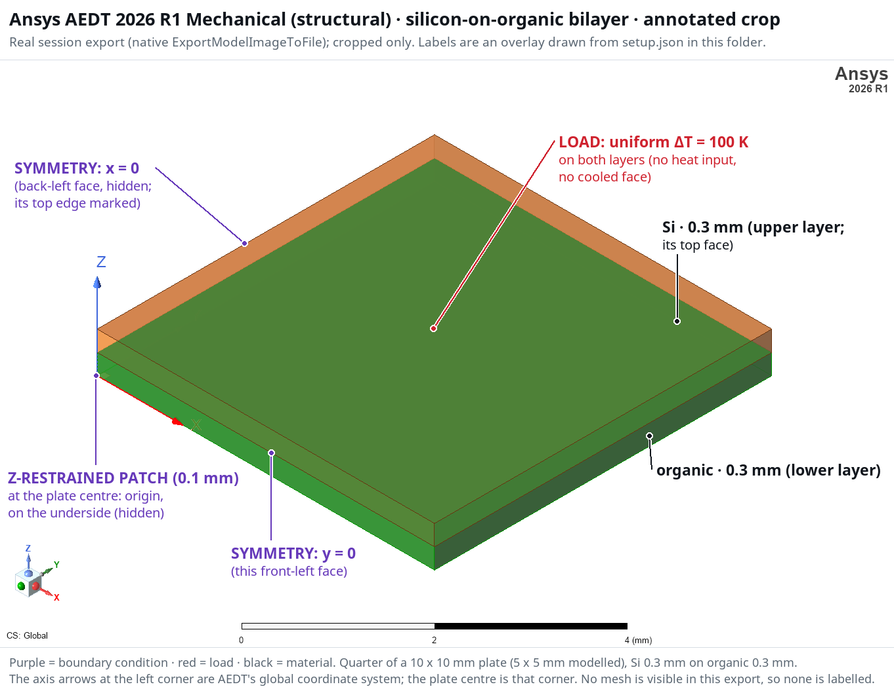
Ansys's heat and structural solver inside Electronics Desktop. Here it is the commercial cross-check: it re-solves our via, wiring-layer, unit-cell temperature and two-layer bending tests for comparison.
Numbers (curvature)
vs AEDT Mechanical
+0.01 %
vs bimaterial closed form
-0.43 %
runtime ratio vs AEDT
3.99×
The closed form ignores free-edge effects, so a few tenths of a percent
are expected; the matched FE agrees to a hundredth.
GLOBAL DRIVER Δuc, the relative in-plane displacement imposed across the critical joint, plus its temperature. Units: µm.
LOCAL RESPONSE inelastic strain, strain range, inelastic work density returned by the viscoplastic joint model. Dimensionless / MJ·m-3.
These are different quantities and are never reported as one.
20 / 67
Where is the critical joint? Searched, not assumed
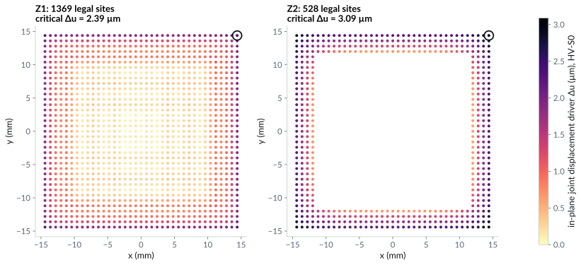
In-plane relative displacement across the BGA layer at every legal site —
1369 for Z1, 528 for Z2. The outermost lattice corner is critical in both.
final_results.json · joint_search
21 / 67
Local solder response and how well it is resolved
The question: Inside that one ball, how much does the solder deform permanently per cycle — and is the number converged?
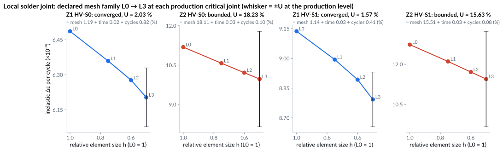
case
Δεin/cycle (×10-3)
status
U
Z1 HV-S0
6.203
converged
2.03 %
Z2 HV-S0
9.971
bounded
18.23 %
Z1 HV-S1
8.793
converged
1.57 %
Z2 HV-S1
11.449
bounded
15.63 %
The mesh rule was declared before the finer
levels were read. Its own acceptance test exposed a parser defect (seven-digit output
times merged increments, biasing the last cycle); fixed and verified — the published
control is reproduced to all ten printed digits.
The full defect history (floating-point lattice,
intermediate counts, obsolete resistances) is in the appendix.
appendix · research/final_closure/README.md
23 / 67
HV-S0 result (headline scenario)
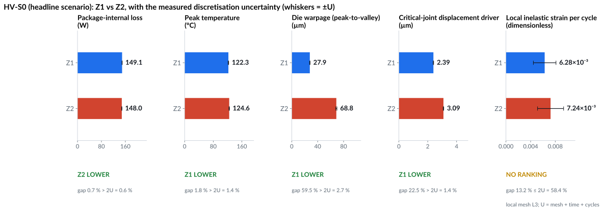
HV-S0 is the headline comparison: both architectures solve, both critical joints lie inside the constitutive calibration and the solder stays solid.
Z2 has lower peak temperature in HV-S1, where the gap exceeds twice the measured discretisation uncertainty. The approximately 1 C difference lies within the measured discretization uncertainty; therefore no thermal architecture ranking is drawn for HV-S0. HV-S2 is not rankable because the Z1 operating point is physically inadmissible for the solid-solder model.
HV-S1 is a sensitivity case: the Z1 joint lies beyond the Norton card's temperature calibration, so its local response is EXTRAPOLATED. Under HV-S2, Z1 exits the valid solid-solder operating domain under the assumed cooling. Z1 has lower local inelastic response in HV-S0, where the gap exceeds twice the measured discretisation uncertainty. In HV-S1 the difference lies within the measured discretisation uncertainty (and the Z1 response is extrapolated), so no ranking is drawn. HV-S2 is not rankable because the Z1 operating point is physically inadmissible for the solid-solder model.
21 open sensitivity inputs: 18 could move
an ordering (B1), 3 only a magnitude (B2); all
18 B1 resolved. Each variant run on the production mesh at HV-S0;
verdicts by the production ordering rule. The 48 V waveform is handled by the scenarios
(slide 25); contact and RDL construction are bounded from the network sweep (loss holds).
A hierarchical electrothermal–mechanical framework for DVPD in which converter synthesis
propagates into an explicit physical package, evaluated in one lineage.
A voltage-fed, return-inclusive package network on an aligned graded grid, with the BGA
count solved as a design variable.
Stage-by-stage checks against commercial and open-source FEM, with model-specific errors
and runtimes instead of one framework accuracy.
Convergence and sensitivity rules declared before results were read; every ordering is
gated by measured uncertainty.
Physical closure reverses an architecture conclusion.
Future work
the converter's switch-state schedule, so one 48 V waveform replaces the named scenarios;
Z2 backside cooling as a co-designed architecture state;
TSV density as a co-design variable: the HV-S0 loss ordering depends on it;
the Icepak conjugate-CFD check extended from one channel to the full cold plate;
qualified electromigration and fatigue data, for absolute reliability statements;
a full-package commercial FE benchmark beyond the unit cell.
29 / 67
Thank you
Contribution: a hierarchical electrothermal–mechanical framework for
distributed vertical power delivery, checked stage by stage against matched reference
solvers, and a demonstration that physical closure reverses an architecture conclusion.
Questions
30 / 67
Appendix
Derivations, defect
history, intermediate results and every validation case in detail.
31 / 67
Appendix — the two stacks, exploded
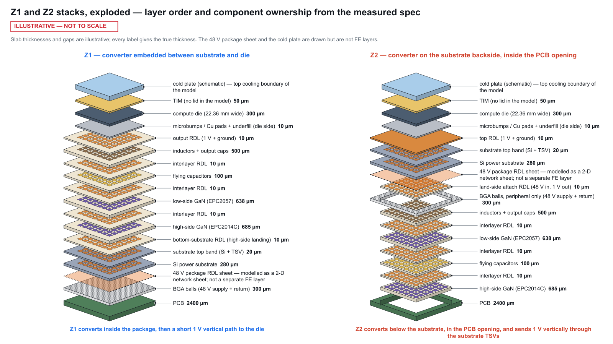
figs/z1_z2_exploded.png — architecture_geometry.json (ILLUSTRATIVE — NOT TO SCALE)
32 / 67
Appendix — Two architectures under comparison
The cutout removes 841 of 1369 legal BGA sites — the central ones.
33 / 67
Appendix — The converter inside each cell
48 V →
3:1 switched capacitor → 16 V →
two-phase buck → 1 V
Why a hybrid? A single buck stage at 48→1 V needs a ~2 % duty cycle,
which is very hard to do efficiently. The capacitor stage does the bulk ratio
with no magnetics; the buck stage then regulates over a sane ratio.
49 cells, ~20.4 A each
switching at 805 kHz
250 nH inductors
tile 2.3685 mm square
The switching-state sequence is not in the
converter model — this becomes the single largest open item in the talk.
34 / 67
Appendix — The model hierarchy — what is analytical, what is FEM
terminal/segment graph with one owner per conductor
NETWORK/ALGEBRAIC
BGA / pad / TSV bulk R
rho L / A with parallel allocation
ANALYTICAL
TSV transition
bulk + two-ended constriction
ANALYTICAL
package RDL
2-D resistive sheet, G V = I
REDUCED PDE / RESISTOR NETWORK
detailed current crowding
cell-centred conservative finite volume
FVM
homogenised materials
explicit RVE homogenization
REDUCED MATERIAL MODEL
cooling
energy balance + fin efficiency + Nusselt correlation
ANALYTICAL / COMPACT
package thermal field
CalculiX C3D8 conduction FE
FEM
electrothermal coupling
Picard fixed point
ITERATIVE COUPLING
global mechanics
CalculiX C3D8I thermoelastic FE
FEM
local solder
displacement-driven viscoplastic FE submodel
FEM (nonlinear)
This is not "an analytical
framework replacing FEM". It is a hierarchy: analytical and reduced-order models where
they are defensible, and FEM retained wherever a full spatial field is genuinely needed.
MOOSE is used as an independent reference, not as a production stage.
research/phase0nah/model_hierarchy.csv · current HEAD
35 / 67
Appendix — How every reduced model is checked in this work
Ansys Icepak 2026 R1 conjugate CFD, one channel half-pitch; MOOSE explicit fins
+16.48 %HISTORICAL 3.78 % in validated domain
Converter waveform
closed-form loss model
none available
NOT EXECUTED
Q3D Extractor and Maxwell DC conduction are installed but not licensed
here. Steady conduction ∇·(k∇T)=0 is the same operator as
∇·(σ∇V)=0, so AEDT Mechanical and MOOSE serve as the DC-conduction references
under the exact analogy.
research/final_closure/accuracy_speed_matrix.json
36 / 67
Appendix — TSV conductor: ρL/A against commercial FEM
Our model
R = ρ L / A
one 30 µm Cu via, 300 µm long — the compact model the ledger uses for every via in both TSV fields.
Reference tool — matched run
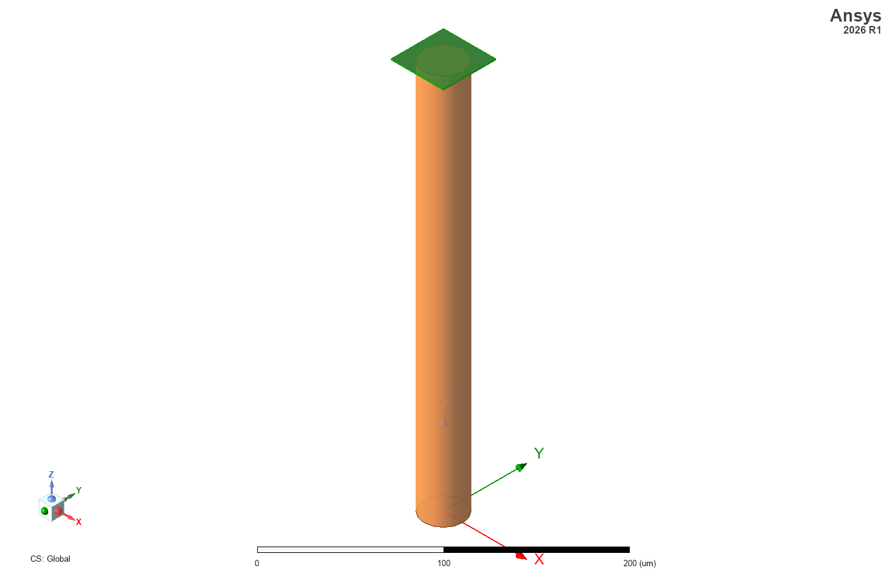
AEDT 2026 R1 Mechanical: Cu cylinder, electrode, flux in, T = 0 out
Error and runtime
ρL/A
7.2150 mΩ
AEDT FEM
7.2987 mΩ
error
-1.15 %
closed form
0.63 µs (0.62 µs–0.64 µs)
AEDT
10.0 s (10.0 s–10.0 s)
runtime ratio
1.6×107
The residual is AEDT's faceted circular section, not physics: a square-bar probe agreed to ~1e-9. A closed form is the right production model here.
Appendix — TSV-field homogenisation against an explicit unit cell
Our model
1444 Cu vias per tile → 18.2 % Cu. Through-thickness: Voigt. In-plane: Maxwell-Garnett.
The FE substrate holds exactly this field inside the 49 tiles and plain Si outside.
Reference tool — matched run
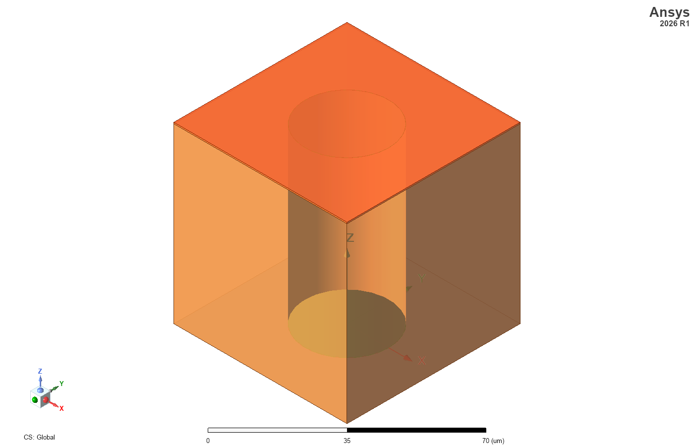
AEDT Mechanical: one Cu via in Si, electrode + isothermal face
Error and runtime
k_z Voigt / AEDT
179.16 / 177.89
error k_z
+0.71 %
k_xy MG / AEDT
156.58 / 156.18
error k_xy
+0.25 %
closed forms
0.72 µs (0.65 µs–0.72 µs)
AEDT k_z
36.1 s (35.2 s–38.0 s)
Both closed forms agree with the explicit unit cell to under one percent, in microseconds instead of minutes.
reference_rve.json · W/mK
38 / 67
Appendix — RDL tier: the check that changed the model
Our model
One 10 µm tier: square Cu grid at the declared occupancy on dielectric.
Laminate: grid formula in-plane, series through-thickness.
Reference tool — matched run
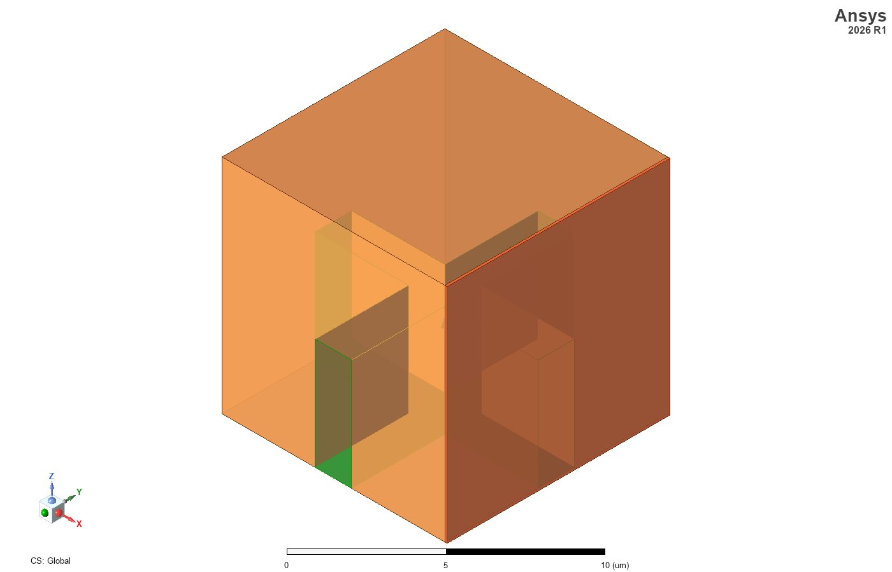
AEDT Mechanical explicit RVE: Cu grid lines in dielectric
Error and runtime
k_x laminate / RVE
33.02 / 34.28
error k_x
-3.69 %
k_z laminate / RVE
0.698 / 0.620
error k_z
+12.49 %
earlier Voigt k_x
+76 %
AEDT k_x
34.1 s (34.0 s–34.1 s)
The series k_z overstates the RVE and the earlier Voigt in-plane value was far too high. The production tensor now ADOPTS the RVE values, and every thermal result was re-run on it.
reference_rve.json · W/mK
39 / 67
Appendix — Package HV RDL network against MOOSE FEM
Our model
Voltage-fed 2-D resistive sheet on an aligned, graded finite-volume grid; the matched BGA count and 49 traced 0.2 mm VIN pads.
Same formulation in both solvers: sheet, areal ball conductance to the rail, uniform pad draw.
Reference tool — matched run
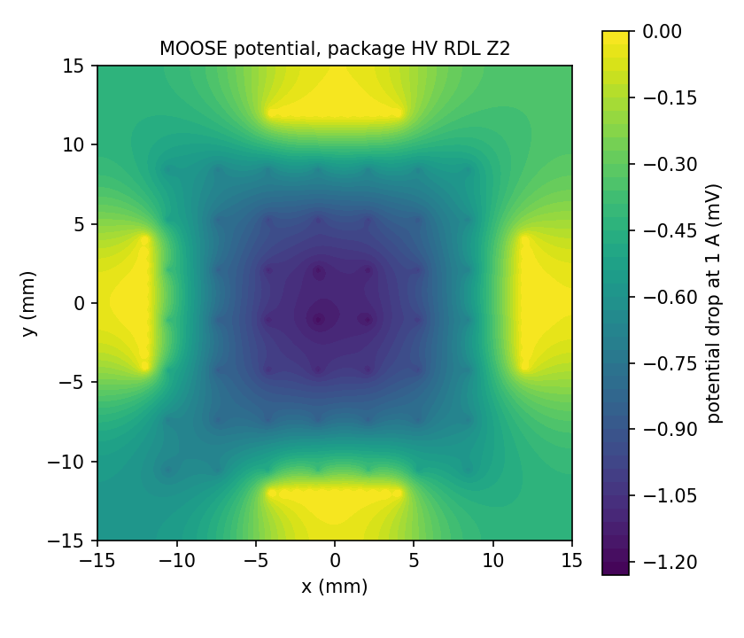
MOOSE heat_transfer-opt on its own gmsh mesh — field rendered from MOOSE's Exodus output (Z2)
Error and runtime
Z1 R_eff ours / MOOSE
1.4201 / 1.4189 mΩ
Z1 error
+0.079 %
Z2 R_eff ours / MOOSE
0.7985 / 0.7976 mΩ
Z2 error
+0.108 %
ours (Z2)
24.4 s (22.5 s–25.8 s)
MOOSE (Z2)
60.8 s (54.8 s–77.9 s)
The reduced network reproduces the FE reference to about 0.1 % for both architectures. Both are 2-D, so the runtime ratio is solver-to-solver — the value of the reduced model is exactness on the sheet problem.
reference_pkg_rdl_moose_Z1/Z2.json · MOOSE
40 / 67
Appendix — The cutout penalty is smaller than where you put the balls
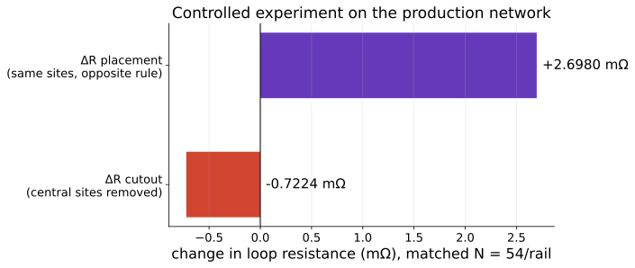
Controlled experiment on the production network: same count, sheet,
contacts, load, rule and grid — only the candidate sites change. The cutout term has been
corrected three times across the project; placement still dominates it.
Appendix — Choosing a pad count needs more than voltage drop
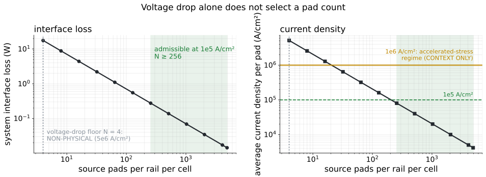
The voltage-drop floor of 4 pads implies 5e6 A/cm² — above the accelerated Cu–Cu EM
test regime. The paper carries the pad term over a terminal-footprint sweep anchored on the DVPD
source's own VIC count; the interface loss stays below 0.06 W across it.
research/phase0naj/pad_count_closure.json · CONTEXT_ONLY current densities
42 / 67
Appendix — Model fidelity should follow the quantity, not the budget
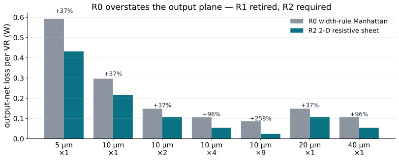
R1 RETIRED after its router bug was fixed and no physical net was
obstructed. Production policy: R0 for point-to-point traces and via stacks, R2
for the distributed output plane (R0 overstates it 37–258 %).
research/phase0naj/fidelity_ladder.json
43 / 67
Appendix — Package thermal FE against commercial FEM
Our model
CalculiX C3D8 on a structured hex mesh — the production thermal solver.
Interior unit cell of the physical package: every layer, tile and gap materials, the converged heat map, the cold-plate film, symmetry sides.
Reference tool — matched run
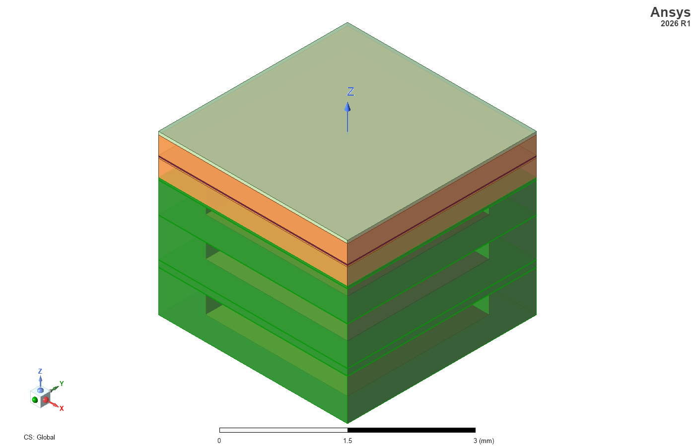
AEDT 2026 R1 Mechanical thermal (Z2 unit cell as built in AEDT); same sources and films
Error and runtime
Z2 T_max ccx / AEDT
119.94 / 120.04 °C
Z2 error / rise
-0.11 %
Z1 T_max ccx / AEDT
122.09 / 122.22 °C
Z1 error / rise
-0.14 %
CalculiX (Z2)
22.7 s (22.0 s–25.2 s)
AEDT (Z2)
77.3 s (71.2 s–90.8 s)
Same problem, two independent FE codes, same machine: solver verification on a matched problem, not experimental validation.
reference_thermal_column_Z1/Z2.json
44 / 67
Appendix — Package thermal FE against an independent open-source FEM
Our model
The same CalculiX unit-cell problem, solved by MOOSE on its own hex meshes at two resolutions.
Shows that the agreement is not one discretisation checked against itself.
Reference tool — matched run
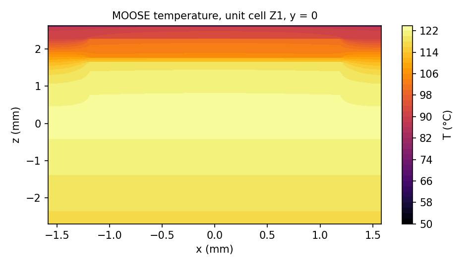
MOOSE heat_transfer-opt, temperature on the y = 0 section of the Z1 unit cell (rendered from its Exodus output)
Error and runtime
Z1 T_max ccx / MOOSE
122.09 / 122.24 °C
Z1 error / rise
-0.16 %
Z2 T_max ccx / MOOSE
119.94 / 120.05 °C
Z2 error / rise
-0.12 %
MOOSE own mesh change (Z1)
+0.27 K
runtime ratio (Z1)
0.55×
Three solvers agree on the unit cell to a fraction of a kelvin; the remaining difference is inside the reference's own mesh dependence.
reference_thermal_column_moose_Z1/Z2.json
45 / 67
Appendix — Thermal expansion mismatch (CTE)
εthermal = α ΔT
Every material has a coefficient of thermal expansion α. Silicon and organic package material differ by roughly 6×. Bonded together and heated, they cannot both have the length they want — so the assembly carries internal stress and bends.
46 / 67
Appendix — Mismatch alone does not predict bending
Young's modulus E measures how hard a material resists being
deformed. A compliant layer can absorb mismatch; a stiff one forces the neighbour
to move instead.
So warpage depends on all of:
CTE of each layer
stiffness E of each layer
thickness of each layer
overall geometry
how the package is held — the boundary conditions
Why this matters here
Z1 and Z2 move the regulator between the substrate and the board side. That changes
the thickness and stiffness distribution of the stack, not just where the heat
is made. Two architectures at the same temperature can bend differently.
47 / 67
Appendix — Warpage
Warpage is global out-of-plane bowing of the package. It is measured peak-to-valley, in micrometres.
It matters because it controls whether the package sits flat enough to assemble, how much load each BGA ball takes, and how far the corner joints are stretched.
48 / 67
Appendix — Stress, strain, and the three kinds of deformation
Strain — how much something deformed, relative to its original
size. Dimensionless.
Stress — the internal force per unit area needed to hold that
deformation. Units MPa.
ELASTIC springs back completely when unloaded.
PLASTIC permanent; does not come back.
CREEP keeps deforming under a steady load,
as a function of time and temperature.
Solder at operating temperature is at a
large fraction of its melting point. It creeps continuously. Treating it as elastic
would miss the damage mechanism entirely — so it is modelled as
viscoplastic.
49 / 67
Appendix — Response is not damage, and damage is not life
Quantity
What it is
Status here
warpage
global bowing, peak-to-valley
COMPUTED
Δuc
displacement imposed across the critical joint
COMPUTED
inelastic strain range
cyclic viscoplastic excursion in the joint
COMPUTED
inelastic work density
energy dissipated per unit volume per cycle
COMPUTED
damage
a model-dependent degradation variable
MODEL-DEPENDENT
cycles to failure
life, via a calibrated correlation
NOT CLAIMED
Darveaux
(10.1115/1.1413764) showed that solder-life constants are
tied to the exact simulation procedure used to calibrate them. Applying them to
FE output produced a different way is not valid. This work therefore reports
response and relative ordering, and refuses absolute life.
Appendix — Two modelling choices that can flip the answer
Stress-free temperature
The temperature at which the assembly is assumed mechanically relaxed. All
differential thermal strain is measured from it.
Choose it 50 K higher and every predicted deformation changes. It is an
assumption, not a measurement, and must be stated.
Boundary conditions
A package floating freely and the same package bolted to a board bend
differently — sometimes in opposite directions.
A warpage number without its constraint description is not interpretable.
Both are declared explicitly in this framework rather than inherited
silently from a solver default.
51 / 67
Appendix — Thermoelastic bending: element and supports
Our model
CalculiX C3D8I — the production element for package warpage.
Si on organic, ΔT = 100 K, symmetry planes and one 0.1 mm patch held in z: supports remove rigid motion without suppressing bending.
Reference tool — matched run
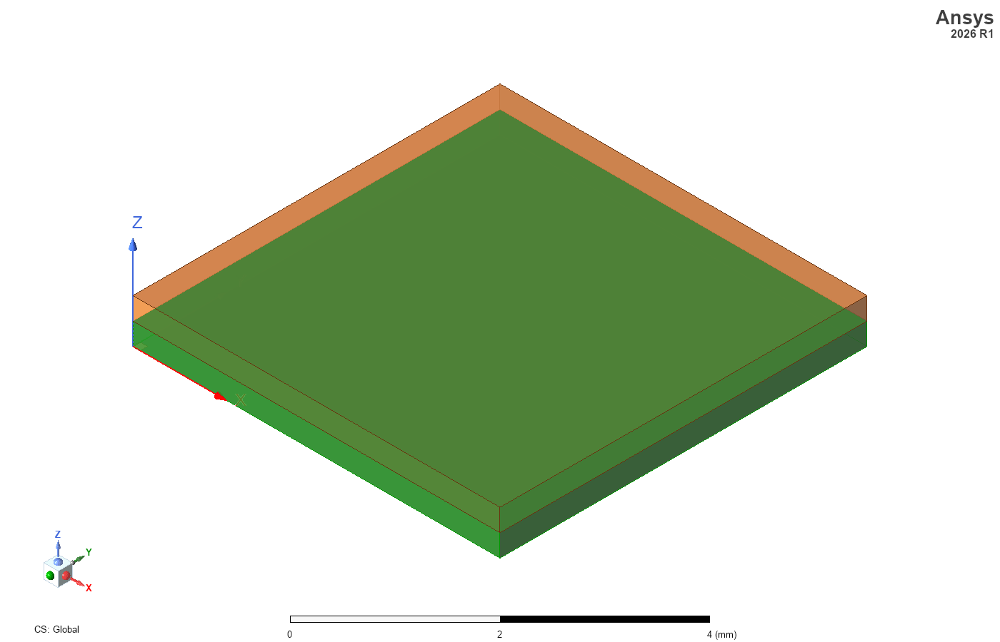
AEDT 2026 R1 Mechanical structural model as built — warpage per kelvin from two solved temperature levels
Error and runtime
CalculiX C3D8I
122.13 µm
Timoshenko closed form
122.67 µm
error vs closed form
-0.43 %
AEDT structural
122.12 µm
error vs AEDT
+0.01 %
CalculiX / AEDT
65.9 s / 262.7 s
CTE-mismatch bending is the mechanism behind every warpage number in the paper. The closed form ignores free-edge effects, so a few-tenths-percent gap to it is expected; the commercial FE agrees as well.
reference_mech_bilayer.json
52 / 67
Appendix — Discretisation and solver checks behind the results
arch
nested refinement
largest change (T_max, warpage, duc, loss)
declared tolerance
Z1
in-plane
1.30 % (die warpage)
within 2 %
Z1
through-thickness
0.37 % (Δuc)
within 2 %
Z2
in-plane
0.67 % (Δuc)
within 2 %
Z2
through-thickness
0.04 % (Δuc)
within 2 %
Production mesh: graded hxy = 1.1 mm grid, every in-plane interval split in 2. The unrefined grid fails the declared tolerance: splitting its in-plane intervals in two changed T_max by 4.7 % (Z1) and 3.3 % (Z2), so production uses the split grid.
Refined structural solves use ITERATIVE CHOLESKY: on the base mesh it matches the direct solver
to -0.010 % in warpage (direct SPOOLES solves 38.6k C3D8I elements and segfaults
at 43k in this build).
Local solder model: declared family L0→L3 (6×8 to 12×16), rule declared before the finer levels were read: Z1 HV-S0 converged (U 2.0 %); Z2 HV-S0 bounded (U 18.2 %); Z1 HV-S1 converged (U 1.6 %); Z2 HV-S1 bounded (U 15.6 %); Z2 HV-S2 bounded (U 28.0 %)
Appendix — Local solder response at the critical joint
scenario
arch
Δuc (µm)
T joint (°C)
Δεin per cycle
HV-S0
Z1
2.374
120.8
6.203e-03
HV-S0
Z2
3.951
99.0
9.971e-03
HV-S1
Z1
2.921
147.7 †
8.793e-03
HV-S1
Z2
4.272
109.8
1.145e-02
HV-S2
Z1
4.841
242.5 † ‡
no convergence
HV-S2
Z2
5.094
137.4 †
1.472e-02
Validated viscoplastic local family on its declared production mesh (L3), each
load change written as its own 3 s step, block-order extraction (DEFECT #65); the harness still
reproduces its published control. † joint above the Norton card's 125 °C calibration — extrapolation.
‡ at or above the SAC305 melting onset (about 217 °C): not an admissible operating point.
Response only; no cycles to failure are computed (Darveaux, 10.1115/1.1413764).
local_solder_HV_S*.json · final_results.json
54 / 67
Appendix — Closure history — earlier phases, fix by fix
Found
Consequence
Z2 homogenised slab replaced by 49 real cells
geometry was not the
architecture being claimed
supply and return not distinguished
half the conduction path was missing
branch phase order was A,A,B — generator gives A,B,A
wrong interleave
average current used where RMS was required
I²R understated
Iavg/√D called an RMS upper bound
it is a lower bound; no finite upper bound exists
source pad treated as circular; Ac says square
21 % area error
pad-count selector was min(n_geom, max(n_drop, n_geom))
identically n_geom — a tautology hiding a 1227× loss span
BGA "sites" that were not on the lattice; 3.0 mm pitch vs 3.165243 mm
every RDL result on the wrong grid
Z1 given 8 balls against Z2's 16
the comparison measured ball count
55 / 67
Appendix — Three defects found in the last two phases
1 · Equal current sharing was an input
The solver injected Itotal/N at every ball, so the "result"
that sharing is equal was the right-hand side. Replaced with a voltage-fed network:
a rail feeds each ball through its own resistance, and the split became an output.
2 · The return conductor was discarded
Return sites were selected and never solved. Adding the return raises the
loop resistance substantially — every earlier package resistance was the supply leg only.
3 · A floating-point bug hid 79 % of the design space
Lattice coordinates were built as -14.4 + i×0.8, which
drifts. The mirror of (-14.4, -12.8) existed as (14.4, 12.800000000000002).
The placement rule tests membership with exact equality, so it silently discarded
1080 of 1369 legal sites. Two headline numbers had been computed inside
the surviving 21 %.
56 / 67
Appendix — Closure history — the final phase, fix by fix
Found
Consequence
Z1 network never converged on a uniform grid — tile edges fell between nodes
aligned graded FV grid: converges on all five metrics
cell terminal was the whole 2.37 mm tile; the layout has a 0.2 mm VIN pad
traced pad adopted; matched count re-solved
converter loss deposited into the encapsulant out to the package corners
phantom corner hot spot removed
bottom heat flow defined as Q − qtop
every historical "energy residual" was zero by construction; now computed
the hxy 1.1→0.8 "refinement" re-graded the grid (Z2's largest element grew)
nested refinement instead. The unrefined grid fails the declared tolerance: splitting its in-plane intervals in two changed T_max by 4.7 % (Z1) and 3.3 % (Z2), so production uses the split grid.
final_closure artifacts
57 / 67
Appendix — CURRENT physical result — HV-S0
146.5 W
Z1 loss
142.7 W
Z2 loss
121.6 °C
Z1 Tmax
120.6 °C
Z2 Tmax
27.6 µm
Z1 die warpage
69.3 µm
Z2 die warpage
2.37 µm
Z1 joint driver
3.95 µm
Z2 joint driver
Matched 54 balls per rail, converged package
networks, converged E–T fixed point, all-site joint search, production mesh
graded hxy = 1.1 mm grid, every in-plane interval split in 2. CURRENT
final_results.json · physical lineage
58 / 67
Appendix — Across the named 48 V scenarios
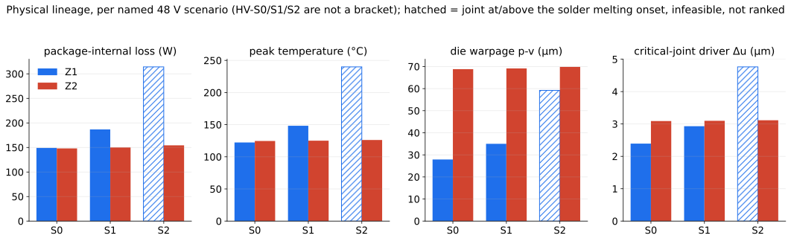
HV-S0/S1/S2 are named scenarios — continuous, buck-duty pulse, overall-ratio pulse
— not a lower/nominal/upper bracket:
from an average current alone there is no finite RMS upper bound at all.
The waveform is not derivable from the converter model, so every HV-side result is conditioned
on one of them. Under HV-S2, Z1 exits the valid solid-solder operating domain under the assumed cooling.
final_results.json · ordering.json
59 / 67
Appendix — Architecture conclusion
In the physically closed lineage, the backside
architecture (Z2) is not mechanically better: its joint displacement driver is
1.66× and its local inelastic response
1.61× that of Z1 at HV-S0, with
2.5× the die warpage.
HISTORICAL the frozen R3C pair showed the opposite — Z2 hotter but
mechanically better. Physical closure reversed it.
Electrical loss: Z2 has lower loss in every scenario for which a valid two-architecture comparison can be made; HV-S2 is not rankable because the Z1 operating point is physically inadmissible for the solid-solder model.
Peak temperature: Z2 has lower peak temperature in HV-S1, where the gap exceeds twice the measured discretisation uncertainty. The approximately 1 C difference lies within the measured discretization uncertainty; therefore no thermal architecture ranking is drawn for HV-S0. HV-S2 is not rankable because the Z1 operating point is physically inadmissible for the solid-solder model.
What survives: peak temperature alone does not rank mechanical response —
now demonstrated on the physical pair as well.
Conditioned on the declared construction (cavity encapsulant, one top cold plate): void out-of-cell volume reverses the joint-driver ordering; a cold plate under the Z2 converter reverses the joint-driver and warpage orderings,
and the narrowly resolved local ordering does not survive several sensitivities (class-B slide).
Appendix — Where the time goes — the physical pair
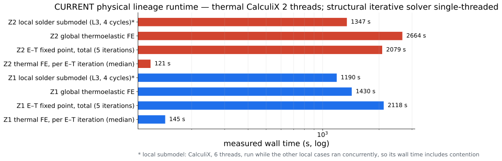
Measured on the current lineage, production meshes (global grid hxy 1.1 mm
split in two; local submodel on its declared production level). The local wall time was measured
while the other local cases ran, so it includes contention.
final_results.json · local_mesh_study.json
61 / 67
Appendix — The historical frozen result, for context
HISTORICAL / FROZEN R3C — NOT A CURRENT PHYSICAL RESULT
Z1
Z2
peak temperature
118.32 °C
126.46 °C
joint driver Δuc
4.625 µm
3.871 µm
inelastic strain increment
1.407e-2
1.148e-2
This pair motivated the hardening. Its mechanical ordering does not survive the
physical lineage — but its conceptual lesson does: peak temperature does not rank local response.
results/phase0mr3c · HISTORICAL FROZEN R3C
62 / 67
Appendix — Limitations — what the paper does not claim
CLASS B sensitivity: 21 inputs, all
18 B1 resolved, 3 B2
bounded. The quantity itself stays undetermined for 9; the claims are conditioned on
them:
individual branch waveforms — B2 bounded, magnitude only
48 V input waveform — B1 resolved, scenario-conditioned
48 V rail RMS current — B1 resolved, scenario-conditioned
BGA loss uses RMS current — B1 resolved, scenario-conditioned
48 V input current waveform closed — B1 resolved, scenario-conditioned
a physical criterion selects the pad count — B2 bounded, magnitude only
GaN epi contribution bounded — B1 resolved, ordering robust
MLCC tier material bounded — B1 resolved; an ordering moves under its bound, the claim is narrowed
inductor/Cout tier bounded — B1 resolved; an ordering moves under its bound, the claim is narrowed
CLASS C qualification, 5 open
microbump loss recomputed on the physical geometry
microbump field geometry defined
microbump contact/UBM/IMC resistance bounded from literature
TSV current-density allowable sourced or explicitly refused
PCB MOT/Tg checks evaluated
Class A (paper-critical) still open: 0. 1.5 A/ball is an engineering
provisioning rule, never an allowable.
rail → ball j: 1/Rball, Rball = ρsolder
h / A = 0.3104 mΩ from Table III geometry
ball → sheet node k: Aoverlap,k / ρc
Loads are drawn at the cell pad nodes. Ball currents are therefore an
output: Ij = (Vrail − VBj) /
Rball.
Identities checked every solve: ΣIball =
Itotal to ~1e-10 A, and ΣgΔV² = V·I to ~1e-10 relative,
with Reff = P / I².
64 / 67
Appendix — why the 48 V RMS cannot be closed
The pinned generator builds every electrical quantity from one scalar,
I_out_rms = sqrt(I_out² + Δi²/12), the triangular-ripple identity on
the output inductor, then duty-weights it.
It contains no switched-capacitor state sequence, no
flying-capacitor charge balance, and no input current variable at all.
The 48 V average therefore comes only from power balance — and average current closes
energy balance while RMS closes conduction loss. One does not give the other.
Closing it requires the per-state switch conduction table, the
charge-transfer schedule, or a netlist of the adopted topology.
Hybrid/SC RMS papers derive input RMS correctly for their
topologies — methodology context only. Importing their ratio would be transferring a
different converter's waveform.